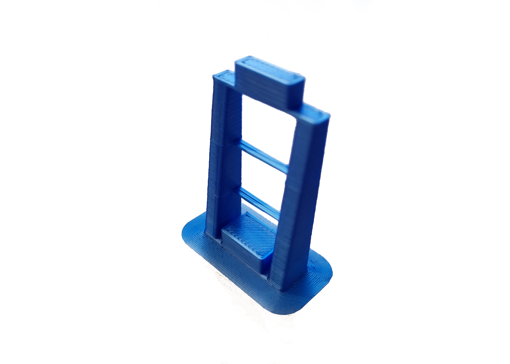
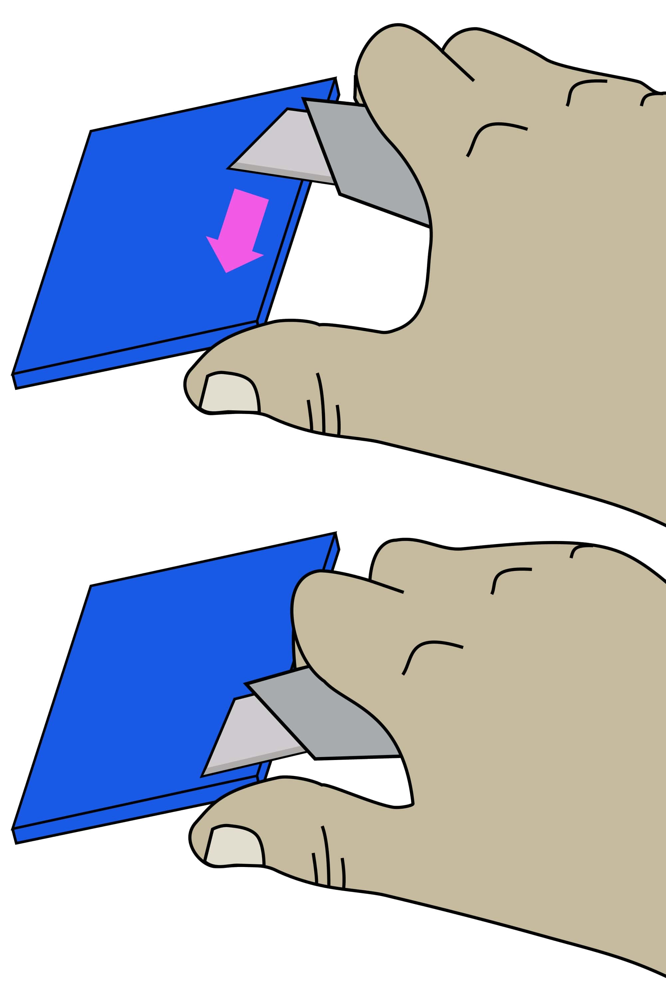

Print the plastic parts
Step 1: Set your printer settings
Almost all parts can be printed out of PLA filament on most RepRap-style printers.
We recommend the following printer settings:
| Setting | Value |
|---|---|
| Material | PLA |
| Material Temperature | Recommended by the PLA brand |
| Layer height | 0.2mm or less |
| Infill | Printer default or more |
| Brim | Recommended for all parts |
| Slice gap closing radius | 0.001mm |
Test whether your printer can print the pieces for other open-source designs. Download and print the leg test file. This will only use about 5 grams of PLA.
The result should look like this (this has been printed with a brim):

As a general rule, strength is more important than surface finish, so very thin layers (less than 0.15mm or so) are unlikely to result in a station that performs any better, though it may improve the appearance.
Step 2: Download and Printing
Now that you have tested your 3D printer and filament you can print the plastic parts:
You can have access to all the STLs in Printables or go for free to our Online CAD software to make your own version. You can also download them individually here:
Step 3: Clean-up of printed parts
Be careful when removing the brim: To avoid injury, first remove the bulk of the brim without a knife. Remove the remaining brim with a peeling action as described below.
Carefully remove the printing brim from all parts. To remove brim:
- Use precision wire cutters to remove most of the brim from the part.
- Clean up the remaining brim with a utility knife:
- Hold the knife in your dominant hand with 4 fingers curled around the handle, leaving your thumb free.
- Hold the part in your other hand, as far away from the surface, to be cut as possible.
- Support the part with the thumb of your dominant hand.
- Place the blade on the surface to be cut, and carefully close your dominant hand, moving the blade, under control, towards your thumb.
